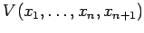
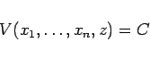
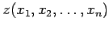
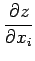
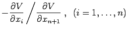
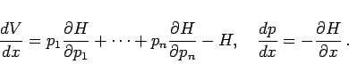
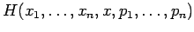
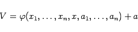
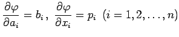

Inhalt Index DeskTop Bronstein

 Differentialgleichungen Partielle Differentialgleichungen Partielle Differentialgleichungen 1. Ordnung Nichtlineare partielle Differentialgleichungen 1. Ordnung
Differentialgleichungen Partielle Differentialgleichungen Partielle Differentialgleichungen 1. Ordnung Nichtlineare partielle Differentialgleichungen 1. Ordnung


Manchmal ist es vorteilhafter, Differentialgleichungen zu betrachten, in denen die gesuchte Funktion z nicht explizit enthalten ist. Der Übergang zu einer derartigen Funktion kann erreicht werden, indem eine zusätzliche unabhängige Veränderliche xn+1=z und eine unbekannte Funktion  eingeführt werden. Für diese Funktion wird über die Gleichung
|  | (9.74a) |
die gesuchte Funktion  bestimmt. Dabei setzt man in (9.73a) anstelle von  die Funktion  ein. Dann wird die Differentialgleichung (9.73a) nach einer beliebigen partiellen Ableitung von V aufgelöst. Die dazugehörige unabhängige Veränderliche wird nach entsprechender Änderung der Numerierung der übrigen Variablen mit x bezeichnet. Schließlich bringt man die Gleichung (9.73a) in die Form
Das System der charakteristischen Differentialgleichungen geht so über in
und
|  | (9.74d) |
Die Gleichungen (9.74c) stellen ein System von 2n gewöhnlichen Differentialgleichungen dar, das einer beliebigen Funktion  von 2n +1 Variablen entspricht. Man nennt es ein kanonisches System oder ein Normalsystem von Differentialgleichungen. Viele Aufgaben der Mechanik und der theoretischen Physik führen auf Systeme dieser Art. Bei Kenntnis eines vollständigen Integrals
|  | (9.74e) |
der Gleichung (9.74b) kann die allgemeine Lösung des Normalsystems (9.74c) bestimmt werden, denn die Gleichungen  mit 2n willkürlichen Parametern ai und bi definieren eine 2n-parametrige Lösung des Normalsystems (9.74c).